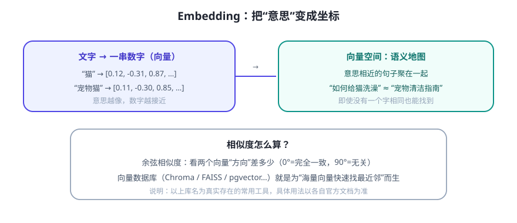

上一课 RAG 里有个关键步骤“向量化”。它背后是 Embedding（嵌入）：把一段文字变成一串数字（向量），让“意思相近”的文字在数字空间里也“靠得近”。
文字 → 坐标：一个类比

关键不是“向量有多神秘”，而是它把“像不像”变成了“距离远近”——这是可以计算的。于是“找相关资料”就变成了“找最近的几个点”。
实践中的组件（先认识，用的时候查文档）
| 组件 | 作用 | 常见选择（真实存在的常用工具） |
|---|---|---|
| Embedding 模型 | 文字 → 向量 | 各家大模型厂商的 embedding 接口、开源模型（如 sentence-transformers） |
| 向量数据库 | 存海量向量 + 快速找最近邻 | Chroma、FAISS、Qdrant、Milvus、pgvector |
| 编排 | 串起切块/检索/问答 | LangChain、LlamaIndex（Day 15 起介绍） |
💡 学习策略：这些库更新很快、API 经常变。不要背 API，要背“流程”。做项目时直接查官方文档/示例，比记忆更可靠。
向量检索的两个常见误区
- 误区 1：向量检索万能。它对“意思接近”很在行，但对“精确数字、编号、专名”可能不如关键词。生产系统常用混合检索（关键词 BM25 + 向量）互补。
- 误区 2：向量维度越高越好。高维更精细但更占资源；够用就好。
动手感受“语义相近”
不用装任何库，回到 Day 7 的迷你 Agent，它的 recall() 就是一次“玩具版语义检索”：把句子拆成中文二元组当“特征”，找重叠最多的记忆。跑一下：
python3 code/mini_agent.py > 记住 我住在上海 > 我想起我住在哪 # 能找到“我住在上海”，尽管字不完全一样
真正的 Embedding 只是把“特征”从手工二元组换成模型学出来的高维语义向量——原理是同一件事。
✍️ 今日练习（约 12 分钟）
- 运行 Day 7 迷你 Agent，试 3 组“换说法提问”，看记忆检索的召回效果与局限。
- 打开任一“上传文档问答”工具，问一个“字面完全不同但意思相同”的问题，感受向量检索的威力。
- 在笔记里写清：你的项目里，哪些资料适合向量检索、哪些必须精确匹配（如订单号）。
📌 今日小结
Embedding文字 → 向量；语义相近 → 距离近 → 可计算
相似度常用余弦相似度：方向越一致越相似
向量数据库为“海量向量找最近邻”而生（Chroma/FAISS/Qdrant/pgvector 等）
工程提醒混合检索更稳：向量找意思 + 关键词找精确
明天预告：Agent 怎么“自己想办法”？学规划能力——任务拆解、ReAct 与自我反思。